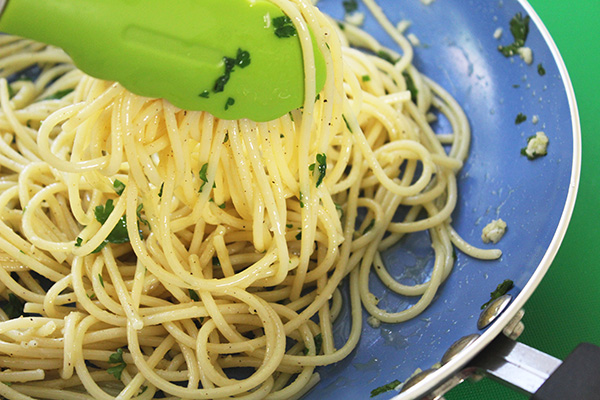

Olive Oil Pasta

Description
This simple pasta dish is a quick and easy recipe that can be made if you are low on time
but want something delicious that will be sure to please. From the smell of fragrant garlic to the rich taste
fresh olive oil, your taste buds will thank you.
The real beauty of this recipe is that it requires very little preparation and only simple cooking skills.
If you can boil water and sauté ingredients, you are good to go. Also, as the ingredient list is so simple,
we can be fairly variable, adding a little more or less, with quantities without ending up with something inedible. Now, let's see what we need to get
started on this soon to be family favorite.
Ingredients
- 1 package pasta (your choice)
- 3-4 cloves garlic
- 1/4 cup kalamata olives, halved
- juice of half a lemon
- parsley sprig
- generous handful of sun dried tomatoes
- 2 Tbsp olive oil
Steps
- Put water to boil in a pot for the pasta.
- While water is coming to a boil, prepare your chopped ingredients. Mince garlic, halve the olives,
and rough chop the parsley.
- Set a non-stick sauté pan to medium-low heat. Your water should be boiling by now. Toss in pasta.
- Once pan is heated, add your olive oil and garlic. Saute a couple of minutes and turn off heat.
- When pasta is cooked, remove, drain, and add to pan with garlic.
- Add in your remaining ingredients and mix everything together.
- Serve and enjoy!